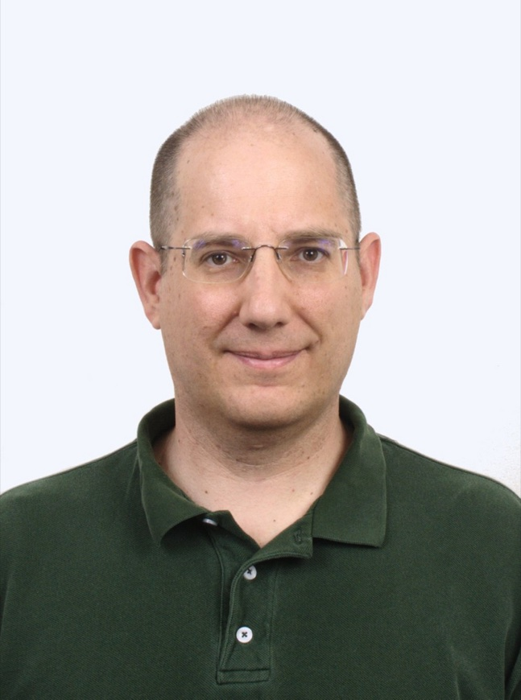

Who We Are

Bruce E. Barnes, Principal Engineer
Our Approach
We believe in a unique and customized consulting experience for each and every client.
What we can do for your project:
Do you need a project designed from the ground up?
We bring your ideas to life from start to finish with decades of experience and strong expertise.
Do you have a project that is late?
Saving a late project can often be difficult because experienced engineers are hard to find, and adding an inexperienced engineer to a project normally makes the project even later. However the engineers at Veratek Design have the experience and design expertise to help move your project forward.
Do you need additional resources?
Many companies have projects with tight development schedules that could use additional resources, but are reluctant to hire more full time employees. The engineers at Veratek Design can provide the level of assistance your project needs in a flexible manner without requiring a long term commitment.
Is there a specific skill that is missing?
New designs often require new skill sets that your team may not be familiar with such as Digital Signal Processing, Field Programmable Gate Arrays, or Embedding Operating Systems. The engineers at Veratek Design can provide the required knowledge and skills needed to train your team and move your design forward.